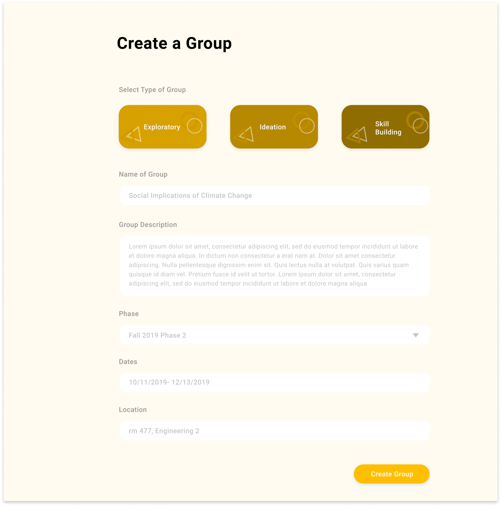
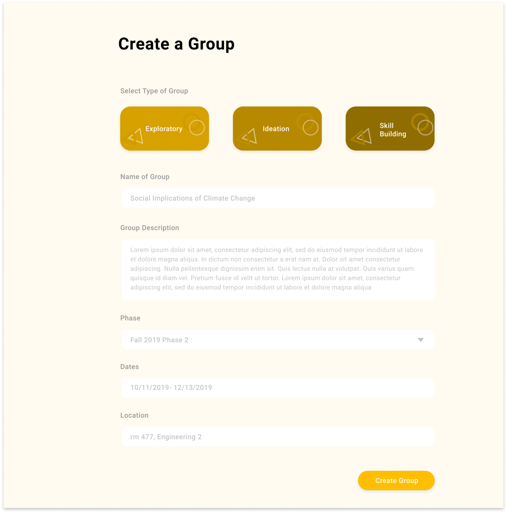
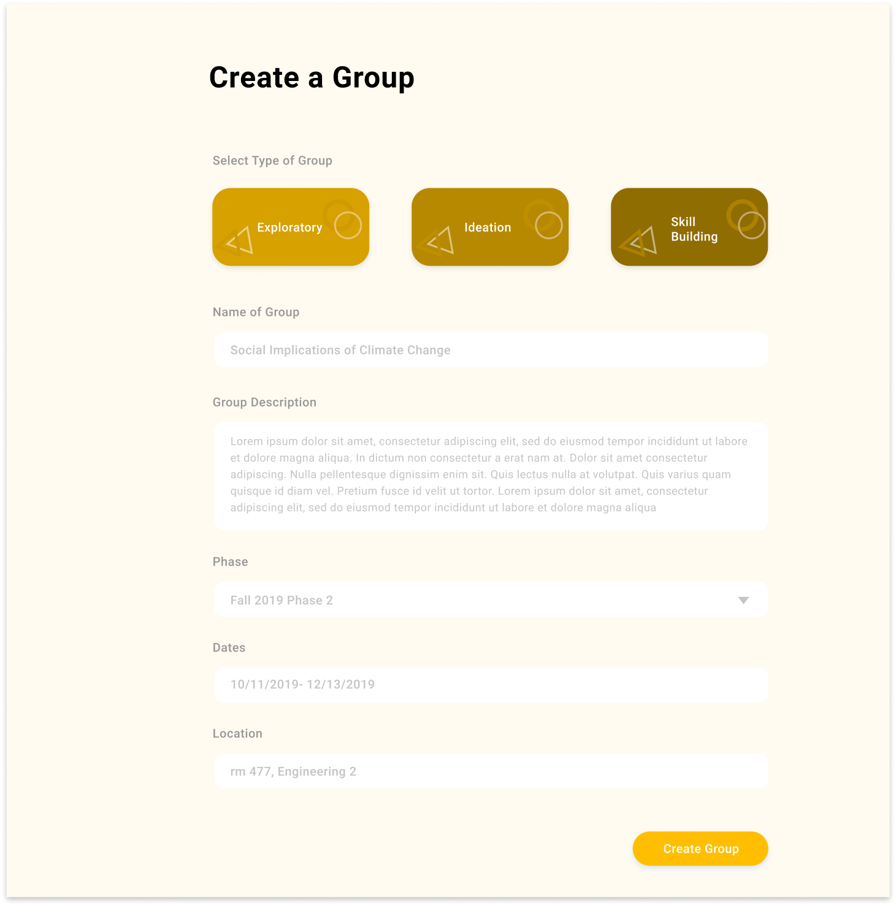

I have been working as an undergraduate research assistant and UX designer at UCSC professor David Lee’s Tech4Good lab since September 2019. Tech4Good focuses on studying the intersection of computational systems and social interaction. Working in this lab has been a wonderful experience because it allows me to apply my knowledge of human-computer interaction into projects and gain new skills that I would not acquire from classes.
Collectively aims to unite students into reading groups and skill-building groups for them to explore real world applications of computer science and other subjects.
Collectively is targeted at both undergraduate and graduate students at UC Santa Cruz. It also involves UC Santa Cruz professors to help them promote their labs and information relating to their areas of research.
Based on our survey responses from 48 students, it is important that Collectively provides:
To attract highly motivated students as better quality research assistants, we designed Collectively so that students participate in reading groups or skill-building groups that interest them the most; doing this will help them find labs pertaining to their interests.
We also added featured professors to every reading group, so students are able to contact them for possible research opportunities.
I worked on the wireframes for the group formation portion of the platform, whereas Dustin sketched the wireframe for the rest of the platform's features.
The entire Tech4Good design team—including me, Dustin, Ivy, and Ana—collaborated to design high fidelity mockups for the Collectively platform, using Figma.
.jpg)